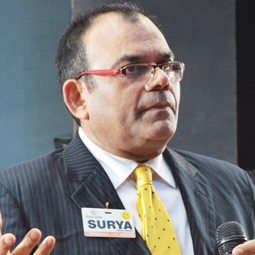

Mr. Surya is the Executive Director of Confluence Integrated Services. He is a well known trainer, motivational speaker and a human development professional. He conducts workshops and training programmes for Indian and Multinational corporations, hotels, schools, educational institutions, retailers, banks, Govt organizations, NGOs etc. Mr. Surya is a qualified T&D specialist from Indian Society for Training and Development (ISTD). He is a trained 16PF professional in Psychometric testing on personality profiling, coaching and facilitating and a life member of Delhi Management Association. Prior to it he has 25 years of Corporate Management experience with various multinational corporations. He is a graduate from Shri Ram College of Commerce, Delhi University and has a post graduate diploma in sales and marketing from Chandigarh . He is certified in Business English communication from Cambridge University.